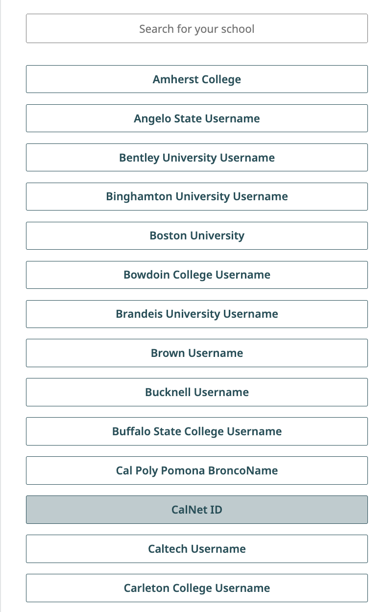
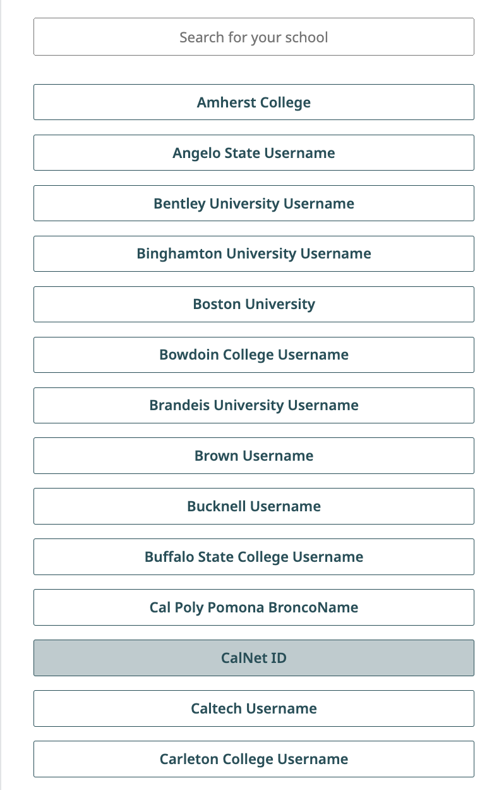
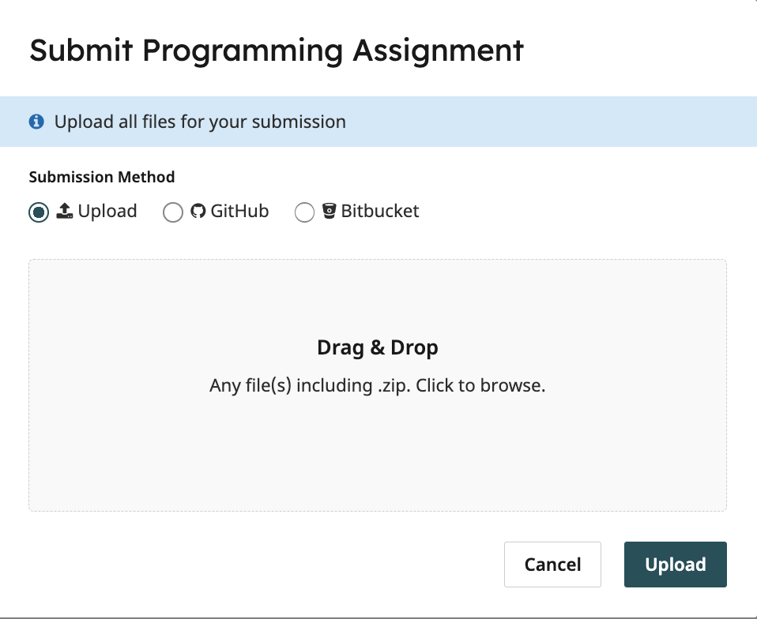

Lab 0: Community Building + Setup
Due at 11:59:59 pm on 6/22/2024.
Starter Files
Download lab00.zip. Inside the archive, you will find starter files for the questions in this lab, along with a copy of the OK autograder.
Important Notes
IMPORTANT: Read and follow the instructions carefully for the whole lab. This is important to ensure you have set everything up properly and understand how to submit and receive credit for assignments. It is YOUR responsibility to make sure you have done this properly.
IMPORTANT: If you run into issues, before asking your TA for help, please make sure you have reread the instructions, checked any troubleshooting steps, and checked the FAQ at the bottom of this page for common issues.
Note: Looking up installation or Python errors on Google is okay (for any assignment in this class, not just this lab)! However, please do not search for the exact solution to a problem on an assignment as this will constitute academic dishonesty.
Data 8 vs C88C
In Data 8 you are doing all your development in the cloud on datahub.berkeley.edu, but we will be using your personal computer for C88C.
In C8, you mainly work in a Python (Jupyter) notebook: you type a piece of code into a cell, run the cell, and voila, the output is magically displayed. Furthermore, you can type text in addition to code in a Python notebook; all the titles, subtitles, and instructions are text.
However, more often in the real world you would be using a combination of terminal and text editor to run your program. And that’s what we will be doing in this class. This splits the process of writing code and running the code — you use a text editor to write your code and then you run your code using Python on the terminal.
Task: Setup
Install a terminal
The terminal is a program that allows you to interact with your computer by entering commands. No matter what operating system you use (Windows, MacOS, Linux), the terminal will be an essential tool for C88C.
Mac or LinuxClick to toggle▼
If you're on a Mac or are using a form of Linux (such as Ubuntu), you already have a program called Terminal on your computer.
- For Mac users, you can open the Terminal by pressing
Cmd + Spaceto open Spotlight Search, then type in "Terminal" and click on the corresponding application to launch it. - For Linux users, you may need to search up how to open the Terminal depending on your Linux distribution.
Click to toggle▼
For Windows users, we recommend downloading a terminal called Git Bash. Please follow the instructions to download Git Bash here:
- Head to this website
- Click the Windows download link.
Open the downloaded file and follow the setup instructions that follow. You should be able to install Git Bash with most of the default configuration options, with one exception.
In the "Configuring the terminal emulator to use with Git Bash" step, select the second option: "Use Windows' default console window."

Install Python 3
Python 3 is our primary programming language. Download the latest version of Python for your operating system (Mac, Windows, Linux) here. Note: Python 3.10+ is recommended for this class. Then follow the instructions for your specific operating system below.
MacOptional info about Python versions: There are 2 major versions of Python in use today: Python 2 and Python 3. In this class, and in most modern applications, we use Python 3 (so when we say "Python" in this class, we really mean "Python 3"). Python 3 is not backwards compatible with Python 2. However, some legacy applications may still use Python 2, which has slightly different syntax and functionality. For example, Python 2 comes preinstalled on Mac, but we want to install Python 3.
Click to toggle▼
- Open the downloaded Python 3 installer file.
- Follow all of the instructions to install Python 3.
To verify that you have installed it properly, open a new Terminal, type the following command, and press enter:
python3 --versionIf installed properly, you should see the following text in your Terminal, where XX.XX is replaced by whichever version of Python 3 you installed. For example, Python 3.11.4.
Python 3.XX.XXClick to toggle▼
- Open the downloaded Python 3 installer file.
- When following the installation instructions, check the box that says "Add Python 3.XX to PATH" (where "XX" is replaced by whichever version of Python 3 you installed, such as "Python 3.11"). This will allow you to execute the
pythoncommand from your terminal (Git Bash).
To verify that you have installed it properly, open Git Bash, type the following command, and press enter:
python3 --versionIf installed properly, you should see the following text in your Terminal, where XX.XX is replaced by whichever version of Python 3 you installed. For example, Python 3.11.4.
Python 3.XX.XXNote: If using
python3 --versiondoesn't work, trypython --version,py --version, orpy3 --version.
IMPORTANT: If you accidentally make a mistake during installation and need to reinstall things, before running python3 —version again, close and reopen the terminal.
Install a text editor
Your computer's terminal combined with the Python 3 you just installed allows you to run Python code. You will also need a text editor, which will help you write Python code.
A text editor is a program that allows you to edit text files (including files that contain code), and often comes with tools to help you customize your experience. You will be using a text editor to create, modify, and save files.
There are many editors out there, each with its own set of features. We highly recommend for this class you use Visual Studio Code, aka VS Code. Visual Studio Code is a full-featured desktop editor with many extensions available to support different languages, and is widely used by course staff.
Note: Please, please, please do not use Microsoft Word to edit programs. Word is designed to edit natural languages like English — trouble will ensue if you try to write Python with Word!
Highly Recommended: Turn on Auto Save
IMPORTANT: If you choose not to turn on the auto save setting, you will need to remember to save your changes every time you make an edit to a file on VS Code. This is important because if you attempt to run tests on your code without saving, it will run the tests on outdated code you wrote previously, not the code you have unsaved in VS Code.
To avoid the problem explained above, turn on auto-save in VS Code so that your changes are automatically saved to the file.
You can do this by going to File > Auto Save.
Optional: Pair Programming Using VS Code Live Share
Throughout this course, you will have many chances to collaboratively code with others in labs and projects. We recommend you download VS Code's Live Share extension to help with this: It's like Google Docs, but for writing code!
Using the terminal
Terminal Walkthrough
Note: If you are already familiar with the terminal, directories, file paths, etc. you can skip this section. Otherwise, click below to learn more.
Note: While you aren't expected to memorize terminal commands and they will not be tested, you are expected to have a basic understanding of the terminal, directories, file paths, etc. for the purpose of completing coding assignments. Knowing how to work with the terminal is also a very important skill for any data/computer scientist.
Click to toggle▼
Your computer's terminal is a command line system or tool for you to interact with folders and files on your computer.
If you're on a Mac, open Terminal. It should look similar to this:

If you're on Windows, open Git Bash (which you should have installed earlier). It should look similar to this:

Alternate DataHub Option (if installing a terminal didn't work)
Click to toggle▼
Note, if you have trouble opening or setting up a terminal on your computer, an alternative option (though this is not recommended) is to use datahub. To open a terminal in datahub, click on “new” in the upper-right hand corner, and click on terminal. Most likely you won't ever need this if everything else is set up properly on your computer, but you may play around with the terminal here if you'd like.
When you open a terminal in datahub, it looks something like this:

When you open up the terminal, you'll see something called a prompt (usually $ or %) right before your cursor. This is how you can tell that you are in the terminal and it is ready to accept commands. Next to the prompt there will also be other useful information, such as the name of your computer, the current directory/path you are in, etc. (the exact information that is displayed depends on what kind of terminal you're using).
Home directory: When you open up the terminal directly, you'll start off in something called your home directory, represented by a tilde (~). A directory is just a fancy word for folder. Directories can contain files or other directories.
Paths: A path is like an address – it tells both you and the computer where to find a particular file or folder (also called a "directory"). For example, /Users/johndoe/Projects/cs88-example/labs is a path that references a particular folder on your computer: the folder labs, which is contained in the folder cs88-example, which is contained in the folder Projects, etc.
The location of every file or directory is denoted by a path. For example, consider the following file structure:
~
|-------Desktop
| |
| |-------Screenshots
| |-----------a.png
| |-----------b.png
|-------Downloads
| |-------c.txtAbsolute path: The absolute path to the file a.png is ~/Desktop/Screenshots/a.png. As the name suggests, this path is absolute — it is the full and complete path and a file/directory's absolute path doesn't change (unless its location of the file/directory changes).
Relative path: Suppose that the directory you're currently in is Desktop. Then the relative path to the file a.png is /Screenshots/a.png. As the name suggests, this path is relative to the directory you currently are in. If you were in the Downloads directory, the relative path would be ../Desktop/Screenshots/a.png. Note that .. represents the parent directory and . represents the current directory.
Common Terminal Commands
The most common terminal commands are as follows:
ls- lists out all the files and directories in the current directorycd <path>- short for "change directory", this allows you to move into the directory specified by the given absolute or relative path<path>cd ..- move up to the parent directorycd ~- move to the home directorycd -- move to the directory you were just previously in
pwd- short for "print working directory", this displays the absolute path of the directory you're currently located inmkdir <directory_name>- "make directory", or create a folder in the current directory with the given<directory_name>touch <file_name>- create a new file with the given<file_name>clear- clear previous commands to make terminal look cleanerrm <file_or_directory>- deletes the given file or directory (WARNING: there is no way to recover files deleted this way. They do NOT go to your trash/recycle bin, they just get deleted permanently.)mv <source_file> <target_directory>- moves the given source file to the given target directory
Keyboard Shortcuts
You may also find these keyboard shortcuts useful:
Up Arrow- replaces the current command you've typed with the last command you entered. You can pressUp Arrowas many times as needed to go through your previous commands.Ctrl + C- aborts current command. Useful if you ran a command and it's stuck loading forever or you want to cancel a command. (Note: For Mac, Ctrl is literally the Control button, not the Command button.)Ctrl + R- allows you to search for previous commandsTab- When entering commands, you can pressTabfor autocomplete. If you pressTabtwice, it will display all autocomplete possibilities.
You can also take a look at our UNIX tutorial for a more detailed explanation of terminal commands.
Task: Creating a c88c directory
Follow the instructions below to set up the directories you'll need for coding assignments.
- Open the terminal for your computer.
Go into your Desktop:
cd ~/DesktopCreate a new directory called
c88c:mkdir c88cGo into the
c88cdirectory you just made:cd c88cCreate 3 directories for the 3 types of coding assignments you'll do in this class:
mkdir labs hw projects
To verify you set it up correctly: Run ls in the terminal to list the files/directories in the c88c folder. You should see only 3 directories: labs hw projects.
Then run ls .. in the terminal to list the files/directories on your desktop. You should see the c88c directory somewhere in the output.
Alternatively you can use the Finder (Mac) or File Explorer (Windows) app to verify your directory structure looks correct - see the next section.
Note: Technically you are not required to put your
c88cdirectory in your desktop, but we recommend this because it's easy to access. Feel free to move it as long as you know how to navigate to it in the future.
CLI vs GUI
Remember that you can access the files and directories (folders) on your computer in two different ways. You can either use the terminal (which is a command line interface or CLI) or you can use a file explorer such as Finder (Mac) or File Explorer (Windows). Both are examples of a graphical user interface (GUI). The techniques for navigating are different, but the files are the same. For example, here's how the labs folder might look ike on each operating system.
Click to toggle▼
Here's how the folder looks in Finder on Mac:
And here's how the exact same folder looks in terminal:
Notice the red box shows you the path in both cases, and the blue ellipse shows you the contents of the labs folder.
Note: At this point your
labsfolder is empty, but eventually it will contain folders for each lab assignment like in the screenshot above.
Click to toggle▼
Here's how the folder looks in File Explorer on Windows:
And here's how the exact same folder looks in PowerShell (a terminal for Windows):
The contents of the c88c folder can be found listed in the GUI, and underneath the ls command in the CLI.
Note: At this point your
labsfolder is empty, but eventually it will contain folders for each lab assignment like in the screenshot above.
VS Code Integrated Terminal
As you work on coding assignments in this course, you will often find yourself switching back and forth between writing code and running code. To make things easier, you do not need to open your terminal app and text editor separately — you can have everything in one window. The following instructions are applicable to VS Code (the recommended editor), but most editors have a similar integrated terminal feature.
- Open VS Code
- At the top menu bar (e.g. where it says File, Edit, Selection, etc.), go to File > Open.
- Navigate to your Desktop and click on the
c88cfolder you just created. Then click Open. (This will open thec88cfolder in VS Code so that you can edit files in that directory. Right now there are no files, just directories.) - At the top menu bar, go to Terminal > New Terminal. It should open a mini terminal window inside your VS Code window.
IMPORTANT for Windows users: By default, VS Code will open PowerShell (another type of terminal) instead of Git Bash (you can tell if you're using PowerShell if the terminal prompt begins with PS). See this article for how to open a Git Bash terminal instead.
You should also configure your terminal settings so that every time you create a new terminal in VS Code, it defaults to opening a Git Bash shell by clicking on Configure Terminal Settings (see the article).
Note: When you open an integrated terminal, your text editor will automatically move you into the directory that you opened in step 2. In this case, it would be something like ~/Desktop/c88c. You can always verify this by running pwd in the terminal to make sure the path that is displayed is the one you expect.
From now on, you can close the external terminal window you opened earlier to create the c88c
directory and just use the VS Code integrated terminal instead.
Python Basics
Python Interpreter
Throughout the course, you may want to try running small bits of Python code and see what gets returned or printed. You can do this using the Python Interpreter, which comes with your installation of Python 3. The way you interact with the Python Interpreter is more or less the same way you interact with code cells in a Jupyter notebook from Data 8.
Follow along with the walkthrough below in your own terminal.
IMPORTANT:
While the Python Interpreter runs inside a terminal shell, the commands you input into the terminal are different from the code you input into the Python interpreter. You can only use Python syntax in the Python interpreter (e.g. when the prompt is >>>) and you can only use terminal commands in the terminal (e.g. when the prompt is $ or %).
Any code you write in the Python Interpreter is NOT saved. When you exit, everything will be lost. When writing code for assignments, you should write your code directly into the Python files using VS Code. However, for testing or debugging you may want to use the Python Interpreter which is why we show you how to use it here.
Run the following command in your terminal:
python3If the Python 3 installation worked, you should see something similar to this:
Python 3.11.4 (main, Jan 20 2024, 17:35:35) [Clang 14.0.0 (clang-1400.0.29.202)] on darwin
Type "help", "copyright", "credits" or "license" for more information.
>>> When you see the >>>, this means the Python Interpreter is ready to accept Python code you type into it.
Windows Troubleshooting
Click to toggle▼
If the python3 command doesn't run at all▼
Try python, py, or py -3 instead.
If Python freezes (doesn't display anything at all)▼
You probably didn't select the "Use Windows' default console window" option when installing Git Bash manually. Trywinpty python, or just uninstall Git Bash and reinstall it with the correct options.
If you see an error like WindowsApps/python: Permission denied▼
Go to the WindowsApps folder whose path is shown, and rename python.exe to python.bak.exe (and similarly, rename python3.exe to python3.bak.exe), then try again.
If Python doesn't run at all, and you used our automated installer▼
Go back and try installing using the manual method.If Python doesn't run at all, and you installed manually▼
Make sure you set up your "PATH" correctly as shown in the Install Python 3 section.If you mixed multiple versions of Python (e.g. 32-bit and 64-bit, or 3.6 and 3.8, etc.)▼
They may conflict. Occasionally, this becomes extremely difficult to fix — even for instructors. Uninstall them one-by-one (the most recent one first), then reinstall only the latest 64-bit version.Intro to Python Syntax
Follow along on your own Python Interpreter with the Python expressions below.
Floating point numbers (floats) behave a lot like real numbers. You can identify a float by the decimal point. All floats have decimal points. To write a floating point number (as a literal), you must add a decimal point!
>>> 3.141592
3.141592
>>> 2 * 3.141592 # you can mix ints and floats
6.283184
>>> pie = 3.141592 # you can assign values to variables
>>> pie
3.141592
>>> pie / pie
1.0
>>> pie / pie == 1 # a float can be equal in value to an int
True
>>> from math import pi # here is a better pi
>>> pi
3.141592653589793
>>> 5.0 / 3.0 # this is division of floats, not ints
1.6666666666666667
>>> 2 ** (1 / 2) # square root - isn't that transcendental?
1.4142135623730951Expressions follow operator precedence (just like in math). Operations are performed one at a time in a specific order. Parenthesis are used to specify order (again, just like in math - remember PEMDAS?).
>>> 2 + 3 - 4 + 5 # equal precedence, left to right
6
>>> 2 + 3 - (4 + 5) # order matters - parentheses are your friend
-4
>>> (((2 + 3) - 4) + 5) # explicit order of the first example
6
>>> 2 + 3 * 4 # * and / bind more tightly than + or -
14
>>> 2 + (3 * 4)
14
>>> (2 + 3) * 4
20
>>> 2 + 3 / 4 * 5 # what about * and / ?
5.75An expression can have multiple return values, called a tuple:
>>> 2, 3
(2, 3)
>>> x, y = 1, pi
>>> x
1
>>> y
3.141592653589793Exiting the Python Interpreter
You can type exit() or press Ctrl + D to exit the Python Interpreter and return to your command line. It looks something like this (on the Mac Terminal):
To verify you are back in your command line/terminal: The prompt should now be $ or % (instead of >>>).
Task: Doing the assignment
IMPORTANT: The instructions for the rest of the lab will walk you through what you'll do for every coding assignment in this class, so make sure you read carefully so you understand how to work on and submit assignments properly.
Downloading the assignment
- Download the starter code for the assignment, if you haven't already. You can either click on the
lab00.zipbutton at the very top of the page, or click lab00.zip. - Move the lab00.zip file into your
~/Desktop/c88c/labsdirectory. You can do this by dragging and dropping it using Finder (Mac) or File Explorer (Windows), or themvcommand in the terminal (if you know how). Unzip the file, if you haven't already. If the file is zipped, it should be called
lab00.zipand look like a single file. In this case, follow the steps below to unzip it. Otherwise, it should be calledlab00and look like a directory. In this case, move on to step 4.- On Mac, in Finder, you can just double click the
lab00.zipfile. - On Windows, in File Explorer, right click the
lab00.zipfile and click Extract All.
- On Mac, in Finder, you can just double click the
- Delete the zip file. Once you have unzipped it, you no longer need the zip file.
Open the
c88cdirectory on VS Code, if you don't already have it open. If you look on the left sidebar and click on the icon that looks like 2 pieces of paper (top left), it will open the Explorer which lets you view the files and directories inc88c. If you click on thelabsdirectory, you should now see a directory calledlab00inside. Then, if you click on thelab00directory, you should see 3 files:lab00.py: The Python file (notice that the file extension is.py) you'll be writing code inok: A program called OkPy used to test if you wrote code correctly (do not open/modify this)lab00.ok: A configuration file for OkPy (do not open/modify this)- See the next sections for screenshots on what this looks like if you're confused.
Workflow overview
For each assignment, we'll provide you with some starter code (for example, lab00.py);
all you have to do is fill in the parts that are incomplete.
IMPORTANT: Whenever we provide you with starter code, you should NOT
modify it other than the parts with a "fill in the blank" or that say "YOUR CODE HERE", unless otherwise specified.
Open lab00.py in your text editor of choice. To do this on VS Code, open the Explorer tab, navigate to the lab00.py file (it's inside labs/lab00) and then click on lab00.py. Clicking on it will open the file in a new tab in the center of your screen on VS Code.
We highly recommend having your text editor and terminal open at the same time. This will allow you to write code and test it without having to switch windows. See VS Code Integrated Terminal if you haven't already for instructions on how to do this.
Here's a screenshot of a typical workspace, which uses VS Code and its integrated terminal on MacOS, and is from the year 2023. Your setup will look slightly different but it should be very similar.

Question 1: Twenty Twenty Four
Open up lab00.py in your text editor. You should see something like this:
def twenty_twenty_four():
"""Come up with the most creative expression that evaluates to 2024,
using only numbers and the +, *, and - operators.
>>> twenty_twenty_four()
2024
"""
return ______
return 2 * 1000 + 24Functions
- The starter code contains the skeleton for a function, which you can think of as similar (but not exactly the same) as a function in mathematics: It can have an input and output. In this case, the keyword
deftells us we are defining a function calledtwenty_twenty_fourwhich takes in no inputs since there is nothing between the parentheses after the function name. - Functions can be used, or called, by writing the name of the function and a set of parentheses, with its inputs inside the parentheses.
Docstring
- The lines in the triple-quotes
"""are called a docstring, which is a description of what the function is supposed to do. When writing code in C88C, you should always read the docstring! - The docstring for this function tells us to "come up with the most creative expression that evaluates to 2024," but that we can only use numbers and arithmetic operators
+(add),*(multiply), and-(subtract).
Doctest
- The lines in the docstring that begin with
>>>are called doctests. Doctests explain what the function is supposed to do by showing actual Python code. - The lines underneath the
>>>show the expected output from running the above Python code in the Python Interpreter, assuming the function has been defined. - The doctest for this function checks that no matter how we do our calculation, calling the function
twenty_twenty_fourshould output, or return, the number 2024.
IMPORTANT: You should never change the doctests in your assignments!
Writing code
Once you understand what the question is asking, you're ready to start writing code!
Below is an example of how to write and test your code manually (later we will show you how to run the autograder tests with OkPy).
- Open
lab00.pyin your text editor. - Replace the underscores in
return ______with an arithmetic expression that evaluates to 2024. It can be as simple or complex as you wish — we are only going to test that it evaluates to 2024. In your terminal, ensure that you are in the
lab00directory. If you're currently in thec88cdirectory, you will need to run:cd labs/lab00Once you are in the
lab00directory, run the following command. NOTE: If you're on Windows and ran into issues with using thepython3command but other commands worked (e.g.python,py,py3, etc.), you should use those instead from now on in all assignments wherever it says to usepython3.python3 -i lab00.py
This should open the Python interpreter. Notice that we added -i to the python3 command.
The -i is called the "interactive flag" because it loads and runs the code in the file
you gave it (lab00.py) and then allows you to enter more Python code in the interpreter.
This will allow you to call the function in the Python interpreter and it should display 2024.
>>> twenty_twenty_four()
2024On the other hand, if you just entered python3 in the terminal and then tried to call the function, it would give you an error like the one below since it doesn't recognize your function (it hasn't been loaded).
>>> twenty_twenty_four()
Traceback (most recent call last):
File "<stdin>", line 1, in <module>
NameError: name 'twenty_twenty_four' is not definedAdditionally, if you omitted the -i and ran python3 lab00.py in the terminal, it would ONLY run the lab00.py file and not open a Python Interpreter. It will not display any output and immediately return to the terminal (since in the file you didn't call the function, you only defined it).
Once you're done testing, exit the Python Interpreter to get back to your terminal shell (enter exit()). You will need to do that each time you run Python interactively.
Troubleshooting Tests (for both manual and autograder tests)
Click to toggle▼
When I run python3 -i lab00.py, it says python3: can't open file 'SOME-FILE-PATH-HERE': [Errno 2] No such file or directory, where SOME-FILE-PATH-HERE is replaced with a file path.▼
First, you will need to exit the Python Interpreter by entering exit(). Then, make sure you've done step 3 above.
It says SyntaxError: invalid syntax▼
If the full error message looks like this:
File "", line 1 >>> twenty_twenty_four() ^^ SyntaxError: invalid syntax
This is because you accidentally typed in the prompt for the Python Interpreter, >>>, when attempting to call the function. You do not need to copy and paste the prompt, just enter twenty_twenty_four().
If the full error message is different, ask your TA for help or ask on Ed.
It says NameError: name 'twenty_twenty_four' is not defined▼
Please read the paragraph above that starts with "Additionally, if you omitted the -i and ran python3 lab00.py in the terminal..."
When I run python3 lab00.py, there is no output and it just returns to the command line immediately▼
Please read the paragraph above that starts with "On the other hand, if you just entered python3 in the terminal and then tried to call the function..."
When I enter twenty_twenty_four(), the only output is > and I can type next to the greater than symbol.▼
Make sure you are calling the function inside the Python Interpreter, not in your command line. If you press Enter and you just keep seeing more > symbols, press Ctrl + C to exit (for Mac users, you should still press the Ctrl button, not the Cmd button).
When I enter twenty_twenty_four(), the output is a number other than 2024▼
Check your arithmetic expression actually evaluates to the correct year.
Additionally, if you are manually testing using the Python Interpreter with the -i flag, be aware that
when you save changes to the file, it does not update automatically. You must exit the Python
interpreter (by entering exit()) and restart it again with the -i flag to load the updated code.
When I enter twenty_twenty_four(), it says NameError: name '___________' is not defined▼
This means either you haven't actually replaced the underscores with an arithmetic expression yet, or you have but your changes were not saved (this can happen if auto save is not turned on). To save, press Ctrl + S (Windows) or Cmd + S (Mac). To turn on auto save, see the Highly Recommended: Turn on Auto Save section.
Running Autograder (OkPy) Tests
In C88C, we will use a program called ok (OkPy) to test our code. ok will be
included in every assignment in this class.
IMPORTANT: You should get into the habit of testing your code often, and especially testing it before submitting your code to Gradescope. The tests we provide to you to download are the exact same tests run on Gradescope when you submit. There are no hidden tests.
In the (integrated) terminal, make sure you are in the
~/Desktop/c88c/labs/lab00directory by usingpwdto display the absolute path of the directory you're currently in. If you are not, use thecdcommand to change directories:cd ~/Desktop/c88c/labs/lab00Run the
okautograder tests for the function we just wrote:python3 ok -q twenty_twenty_four- If this is your first time running an OkPy test, it will ask you to enter your @berkeley.edu email. You should do this and press Enter. It will then open a new tab on your browser to log in to the okpy.org website. Click Confirm. This will then bring you to your okpy.org dashboard. You can close this tab and go back to the terminal.
If you wrote your code correctly, you should see a successful test output similar to the one below:
=====================================================================
Assignment: Lab 0
OK, version v1.18.1
=====================================================================
~~~~~~~~~~~~~~~~~~~~~~~~~~~~~~~~~~~~~~~~~~~~~~~~~~~~~~~~~~~~~~~~~~~~~
Running tests
---------------------------------------------------------------------
Test summary
1 test cases passed! No cases failed.
Backup... 100% complete
Backup successful for user: oski@berkeley.edu
URL: https://okpy.org/cal/cs88/sp24/lab00/backups/abc123
OK is up to dateIf you didn't pass the tests, ok will instead show you something like this:
=====================================================================
Assignment: Lab 0
OK, version v1.18.1
=====================================================================
~~~~~~~~~~~~~~~~~~~~~~~~~~~~~~~~~~~~~~~~~~~~~~~~~~~~~~~~~~~~~~~~~~~~~
Running tests
---------------------------------------------------------------------
Doctests for twenty_twenty_four
>>> from lab00 import *
>>> twenty_twenty_four()
2014
# Error: expected
# 2024
# but got
# 2014
---------------------------------------------------------------------
Test summary
0 test cases passed before encountering first failed test case
Backup... 100% complete
Backup successful for user: oski@berkeley.edu
URL: https://okpy.org/cal/cs88/sp24/lab00/backups/abc123
OK is up to dateFix your code in the text editor until the test passes. See the Troubleshooting Tests section just above this section if you're having trouble.
IMPORTANT: Generally, you will need to be in the assignment directory to run OkPy tests for that assignment.
Task: Submitting the Assignment
Now that you have completed your first C88C assignment, it's time to turn it in. You can follow these next steps to submit your work and get points.
IMPORTANT: Writing the code locally on your computer and running the OkPy tests alone does NOT give you credit. You MUST write correct code AND submit to Gradescope to receive credit.
Log in with School Credentials using your CalNet ID to Gradescope. You’ll be taken to your Dashboard as soon as you log in.
 

- On your Dashboard, select the course C88C. You should have already been added to Gradescope. If this is not the case, please make a private Ed post. This will take you to the list of assignments in the course that you’re able to submit. On this list, you will see the status of the assignment, the release date, and the due date.
- Click on the assignment to open it.
When the dialog box appears, click on the gray area that says Drag & Drop. This will open your file finder and you should select your code file (example:
lab00.py) that you edited for this assignment.Once you’ve chosen your file select the Upload button. When your upload is successful, you’ll see a confirmation message on your screen and you’ll receive an email confirmation.

- Wait a few seconds for the autograder to grade your code file. Note that the screenshot is from 2023, but your year will be different.
- It is YOUR responsibility to wait for the autograder to run and verify that the results on Gradescope match what you expected from running the OkPy tests locally on your computer
- If you see that the autograder failed to execute, this is usually due to a syntax error. Run the OkPy tests on your computer locally to determine the error. If you aren't sure what's going on, it is YOUR responsibility to ask course staff (e.g. your lab TA, office hours, making a private Ed post) for help before the deadline.
- There are no hidden tests. The score you see on Gradescope on the top right is what you will get.
- You can resubmit by clicking the Resubmit button at the bottom right as much as you want before the deadline
- You can check that the code file(s) you uploaded are correct by clicking on the Code tab on the top right

🎉🎉 Congratulations on finishing your first lab and welcome to C88C. We hope this will be a rewarding semester!
Appendix
Useful Python command line options
When running a Python file, you can use flags on the command line to inspect your code further. Here are a few that will come in handy. If you want to learn more about other Python flags, take a look at the documentation.
Using no flags will run the code in the file you provide and return you to the command line.
python3 lab00.py-i: The-ioption runs your Python script first, then opens an interactive session. To exit, typeexit()into the interpreter prompt. You can also use the keyboard shortcutCtrl-Don Linux/Mac machines orCtrl-Z Enteron Windows.If you edit the Python file while running it interactively, you will need to exit and restart the interpreter in order for those changes to take effect.
python3 -i lab00.py-m doctest: Runs doctests in a particular file. If there is no output, it means all doctests passed. Doctests are marked by triple quotes (""") and are usually located within functions. DO NOT DELETE DOCTESTS ON YOUR LABS AND HOMEWORKS. The autograder (OK) will not run properly without them.python3 -m doctest lab00.py
Python Tutor
Python Tutor is a website that allows you to write Python code in your web browser and see it visualized step by step. This is a super useful tool that can help you understand exactly what your code is doing and also keeps track of what variables’ values are along the way. If you ever have trouble understanding what your code is doing, or finding a bug, pull up python tutor and step through it!
(Optional) Text Editor Guides
For your reference, we've written some guides on using popular text editors. After you're done with lab, you can take a look if you're interested:
- VS Code: A text editor with a graphical user interface.
- Emacs: A command-line editor.
- Vim: A command-line editor.
Common issues / FAQs
Click the questions to toggle showing/hiding the answers.
1. How to exit the Python interpreter?▼
You can type
exit() or Ctrl + D to return to your command line. It looks something like this:
Note: Any code you write in the Python Interpreter is NOT saved. When you exit, everything will be lost. When writing code for assignments, you should write your code directly into the Python files. However, for testing or debugging you may want to use the Python Interpreter which is why we show you how to use it here.
2. For assignments, do I turn in the .py file or the .ok file or both on gradescope?▼
Only the .py file(s). Read the Submitting the Assignment section for the specific instructions.
3. How do I run the autograder tests with OkPy to check if my solution is correct?▼
You can run the autograder tests with OkPy by following the instructions in the Running Autograder (OkPy) Tests section.
4. Where should I run commands like python3 ok -q twenty_twenty_four▼
These commands should be run on the terminal, not within the
.py file nor in the Python Interpreter. See the Running Autograder (OkPy) Tests section.
5. Why is it saying the ok command isn’t working?▼
Read the Troubleshooting Tests section above.
6. I changed my code and I'm sure it’s correct but why is the OkPy test failing?▼
Make sure to turn on auto save (see Highly Recommended: Turn on Auto Save) and/or save and then rerun the tests (see Running Autograder (OkPy) Tests).
7. I changed my code and I'm sure it’s correct but why is the interactive python interpreter displaying the wrong answer?▼
Make sure to:
- Turn on auto save and/or save the file (details in FAQ 6 above)
- Then exit the python interpreter (details in FAQ 1 above)
- Rerun it, and try again. This is because the python interpreter doesn’t automatically update the code when you save changes to the file. You must exit the Python interpreter and restart it again to load the updated code.
Submission
When you are done, submit your file to Gradescope. You only need to upload the following files:
lab00.py